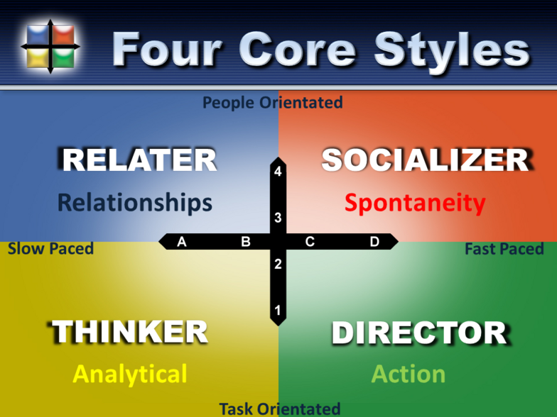
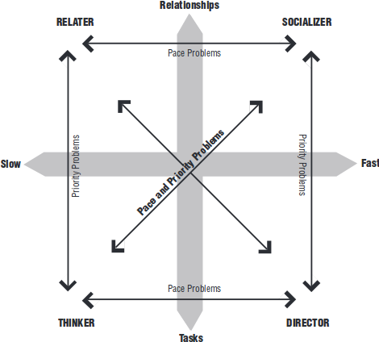
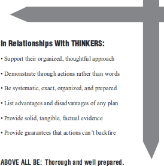
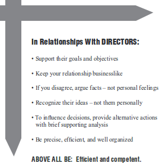
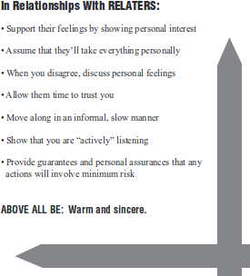
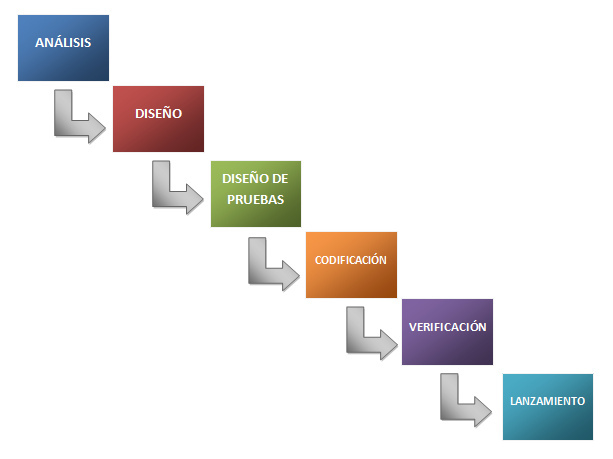
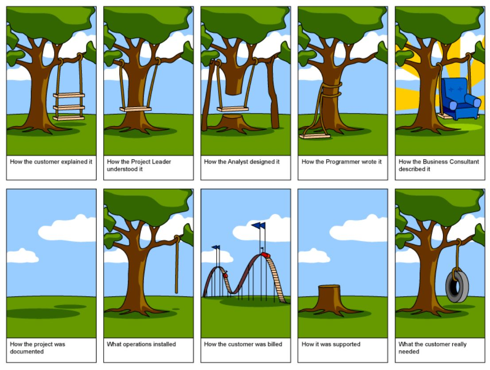
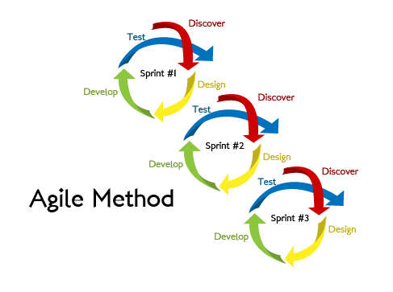
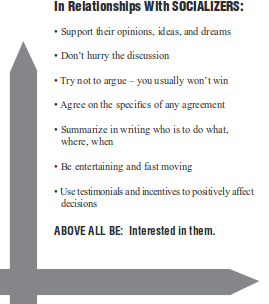

Es hora de decir adiós¶
Esta será la última clase del semestre en cuanto a contenidos, trataremos de cerrar con broche de oro con lo que debería depararte el destino después del curso de Aplicaciones de la Matemática en la Ingeniería.
Mundo Laboral¶
Esta sección está basada casi en su totalidad en la versión del curso dictada el año 2018, en esa ocasión el que dictó la clase de Mundo Laboral fue Sebastián Flores Benner (mi actual jefe), quien tiene mucha más experiencia en esto.
Entrevista de Trabajo¶
Algunos tips y recomendaciones que podrían ser útiles a la hora de enfrentar una entrevista de trabajo. Digámos las cosas como son, los sansanos no nos caracterizamos por ser las personas más elocuentes del país. Si a lo anterior le sumas la carrera de Ingeniería Civil Matemática obtenemos un mal cliché.
Antes¶
Transversales
Participar en actividades extraprogramáticas, representación de la carrera u otros intereses.
Objetivo: aprender a distribuir tiempos.
Obtener aprendizajes fuera de la universidad: cursos en línea, kaggle, etc.
Objetivo: romper la burbuja y tener “calle”.
Maximizar el aprendizaje, aún a costo de bajar las notas.
Objetivo: obtener recomendaciones, capacidades y habilidades.
Generar perfil profesional: LinkedIn, correo profesional, etc.
Objetivo: mostrarse profesional y poder hacer networking.
Preparación
Sobre la empresa: ¿Qué hacen? ¿Porqué lo hacen? ¿Quiénes pagan por el producto/servicio? ¿Quiénes trabajan en la empresa?
Sobre la posición: ¿Qué se espera del cargo? ¿Que responsabilidades tendrá? ¿Qué herramientas y conocimientos previos se requieren?
Referencias: ¿Conozco alguien que ha trabajado/entrevistado ahí? ¿Qué tipo de entrevistas hacen?
Lecturas: Si tienes poca/nula experiencia en entrevistas, googlea e infórmate de las preguntas más comunes y prepara algunas respuestas honestas.
Todos las condiciones de un trabajo son referenciales. Si estás interesado, demuéstralo y negocia.
Curriculum Vitae
Formato: Evitar templates clásicos, buscar algo que sea memorable.
Extensión: 1 página. Máximo 2 páginas.
Ortografía: Que una tercera persona, ojalá un maniático del detalle, revise el CV.
Proactividad: Orientación a resultados generados y experiencias adquiridas.
Contenido: Datos de identificación, estudios relevantes al cargo, trabajos anteriores, referencias. No: estado civil, hijos, fotos, información no relevante.
Durante¶
Actitud
Relajado pero interesado:
No pierdes nada. Estadísticamente, lo más probable es que no consigas el trabajo/práctica pero si ganarás experiencia para la próxima entrevista.
El mayor riesgo está en el lado del empleador, quien está gastando tiempo y recursos por una apuesta de un trabajador sobre la media.
Interesado y Proactivo:
Se busca gente que solucione problemas, no que se quede pasiva, menos aún que los genere.
Muestra interés genuino por el trabajo/práctica.
Respaldo con ejemplos:
Ten preparados ejemplos de proyectos y trabajos que hayan destacado y que demuestren pasión y calidad.
Beer Test
Si la persona que hace la entrevista es otro ingeniero, relájate…
Situación es fácil de leer y anticipar con suficiente preparación.
Lo más probable es que el otro ingeniero estaba en medio de su trabajo y lo están obligando a realizar entrevistas.
No tiene más preparación para hacer entrevistas que tú como entrevistado. Probablemente sólo googleó “Interview questions” en google y anotó las que le parecían más razonables.
Sólo hay que pasar el beer test: el otro ingeniero sólo busca alguien que sea suficientemente capacitado para resolver problemas y que sea alguien con quien no sea desagradable trabajar.
Algunas preguntas
Sobre tipo de mentalidad: ¿Cómo has superado un obstáculo o fracaso?
Soble trabajo con stress: ¿Cómo enfrentas situaciones difíciles, como deadlines o personas complejas?
Sobre trabajo en equipo: ¿Cómo trabajas en equipo?
Sobre frustración: ¿Cómo has tratado o tratarías el caso de un compañero de equipo que no hace su parte?
Sobre rigor y detallismo: Cuéntame de algún proyecto personal que te represente profesionalmente.
Después¶
Follow Up
Reflexiona sobre lo que podrías haber hecho mejor. ¿Mejor preparación? ¿Revisión de conceptos e ideas? ¿Mayor confianza? Corrige para hacerlo mejor la próxima vez.
Envía un correo agradeciendo la entrevista sin ser falso: “consideré interesante la pregunta X, …”. A cada puesto postulan 10 a 100 personas, y esos pequeños gestos destacan.
En caso de no ser aceptado, puedes pedir retroalimentación. Poca gente lo hace. A veces las razones son diametralmente opuestas a las que uno imaginaba.
La práctica hace al maestro: postula a prácticas o trabajos aunque no estes 100% interesado. Permitirá generar confianza para la entrevista del trabajo soñado.
La oficina¶
La vida en la oficina puede parecer una locura en ocasiones, aquí algunas cosas a tener en consideración
Principio de Incompetencia de Peter
En una jerarquía, todo empleado tiende a ascender hasta su nivel de incompetencia: la nota sube hasta cortarse.
Principio de Hanlon
Nunca atribuyas a la maldad lo que puede ser explicado por la estupidez.
Ley de Parkinson
El trabajo se expande hasta llenar el tiempo disponible para su realización.
Ley de Murphy
Todo lo que puede salir mal, saldrá mal.
Relaciones Interpersonales¶
(Source: Dr. Tony Alessandra, creador de The Platinium Rule.)
Silver Rule
One should not treat others in ways that one would not like to be treated: No trates a otros en una forma que no quieras ser tratado.
Golden Rule
One should treat others as one would like others to treat oneself: Trata a otros en la misma forma que quieras ser tratado.
Platinium Rule
Treat others the way they want to be treated: Trata a otros en la forma que ellos quieren ser tratados.
Enfoque reduccionista y simplista, pero sencillo de recordar y aplicar.
Hay cuatro tipos básicos de personalidad:
Pensador (Thinker)
Director (Director)
Relacionador (Relater)
Sociabilizador (Socializer)

El cliché:
Pensador (Thinker): científico/contador.
Director (Director): gerente/sargento.
Relacionador (Relater): enfermero/sicólogo.
Sociabilizador (Socializer): vendedor de autos/publicista.

Thinker¶

¿Qué hacen bien?
Organizar y planificar.
Rápido para pensar, pero lento para hablar y actuar.
Trabajar individualmente.
¿Qué les cuesta?
Trabajar con gente desorganizada o en ambientes caóticos.
Hablar de temas personales.
Trabajar en grupo.
Instrucciones incompletas o confusas.
Director¶

¿Qué hacen bien?
Tomar el control.
Realizar decisiones bajo riesgo.
Sobreponerse a obstáculos.
¿Qué les cuesta?
Tareas repetitivas.
Ser diplomáticos.
Reglas y regulaciones.
No son tímidos, pero sí reservados de temas personales.
Relaters¶

¿Qué hacen bien?
Amigables y sensibles: buenos oyentes.
Construir redes de amigos.
Coordinar y cooperar con otros.
¿Qué les cuesta?
Competir.
Trabajar con gente dictatorial o poco amigable.
Tomar decisiones grandes, propensos a rechazar los cambios.
Emitir opiniones contrarias.
Metodologías de Trabajo¶
Cascada (Waterfall):
Cliente define requerimientos al inicio y empresa cumple, etapa a etapa, con desarrollo especificado.
Orientado a proyectos de alta complejidad, con horizontes de tiempo de años.
Desarrollo Ágil (Agile):
Trabajo codo a codo con cliente mediante iteraciones constantes.
Orientado a proyectos de alta variabilidad, con horizontes de tiempo de semanas/meses.
Waterfall¶
Enfoque metodológico que ordena rigurosa4ente las etapas del proceso para el desarrollo de software, de tal forma que el inicio de cada etapa debe esperar a la finalización de la etapa anterior.

Ventajas
Promueve análisis sobre improvisación: Definir antes que diseñar, diseñar antes de codificar.
Modelo tradicional: ampliamente conocido y utilizado con frecuencia.
Fácil de implementar, entender y dirigir.
Requiere de menos capital y herramientas para hacerlo funcionar de manera óptima.
Desventajas
Proyectos en el mundo real no son lineales; el cliente siempre tiene ideas adicionales. Involucrar tardíamente al cliente conlleva disconformidad y fracaso del proyecto.
Secuencialismo: etapa \(i+1\) no se puede llevar a cabo a menos que se haya culminado la etapa \(i\).
Demoras: No es posible paralelizar etapas y el software sólo puede validarse una vez que todas las etapas anteriores han finalizado.
Propenso a costos adicionales: errores no detectados en etapa \(i\) conducen a cambios en todas las etapas posteriores ya realizadas.
Promueve respeto y obediencia sobre innovación y creatividad.

Agile¶
Enfoque metodológico que promueve el desarrollo iterativo e incremental, donde los requisitos y soluciones evolucionan mediante la colaboración de grupos auto-organizados y multidisciplinarios.

Manifesto for Agile Software Development, 2001
We are uncovering better ways of developing software by doing it and helping others do it. Through this work we have come to value:
Individuals and interactions over processes and tools
Working software over comprehensive documentation
Customer collaboration over contract negotiation
Responding to change over following a plan
That is, while there is value in the items on the right, we value the items on the left more.
Principios Básicos
La prioridad es satisfacer al cliente mediante tempranas y continuas entregas de software que le aporte un valor.
Dar la bienvenida a los cambios. Se capturan los cambios para que el cliente tenga una ventaja competitiva.
Entregar frecuentemente software que funcione desde un par de semanas a un par de meses, con el menor intervalo de tiempo posible entre entregas.
La gente del negocio y los desarrolladores deben trabajar juntos a lo largo del proyecto. El cliente es un aliado, no un enemigo.
Construir el proyecto en torno a individuos motivados. Darles el entorno y el apoyo que necesitan y confiar en ellos para conseguir finalizar el trabajo.
El diálogo cara a cara es el mejor método para comunicar información dentro de un equipo de desarrollo.
El software que funciona es la medida principal de progreso. La simplicidad es esencial.
Ventajas
Respuesta rápida a cambios de requisitos, minimizando costos, tiempo y frustración.
Efecto IKEA: el cliente se involucra y tiene una mejor satisfacción sobre el resultado final.
Al privilegiar la simplicidad se eliminan trabajos innecesarios/superfluos.
Permite paralelizar requerimientos y validar implementaciones por separado.
Puesto que el software es siempre “casi funcional” permite mantener proyecto en costo acordado. Siempre es posible parar el proyecto en la iteración actual.
Promueve innovación y creatividad sobre respeto y obediencia.
Desventajas
Falta de documentación del diseño.
Problemas derivados de la comunicación oral: ambiguedad y futilidad.
Alta dependencia a las personas del equipo.
Restricciones en cuanto al tamaño y la complejidad de los proyectos.
Agile vs Waterfall¶
Adaptividad vs Predictibilidad
Iterativo vs Secuencial
Código vs Documentación
La Metodología Agil puede interpretarse como una aplicación del principio de Pareto (ley del 80-20), que dice que, para muchos eventos, aproximadamente 80% de los efectos proviene del 20% de las causas.
Reuniones tempranas con el cliente permite determinar cuáles son las causas de mayor impacto y establecer una ruta óptima de construcción en función de los requerimientos cambiantes del cliente.
Algunos ejemplos:
Aplicacion en Ingeniería
Tener reuniones pequeñas reuniones semanales es mejor que una gran reunión mensual.
Mejorar incrementalmente informe e implementación numérica.
El cliente tiene derecho cambiar de opinión: ¡Está pagando por ello!
Aplicacion en Vida Universitaria
Tener lo antes posible un entregable que garantice el 50-70 % de la nota.
Mejorar incrementalmente el entregable, en función del tiempo disponible y del esfuerzo requerido.
Si se requiere código numérico, preocuparse del código hasta que funcione, luego documentar.
El profesor es el cliente: preguntar con tiempo y clarificar expectativas. Lo esencial es cumplir los requerimientos.
Ética¶
¿Has tomado algún curso de ética durante tu vida universitaria? ¿En cuántos cursos te han hablado de ética? Muchas veces el foco de aprendizaje son las habilidades técnicas, ya sea en menosprecio de las habilidades blandas o asumiendo que todos las poseen.
Como cualquier otra habilidad, la ética hay que cultivarla. En conjunto a un pensamiento lógico y crítico es posible llevar los problemas con sus respectivas soluciones a un siguiente nivel.
En el contexto del curso, hay una rama de la ética llamada Data Ethics, la cual cubre una gama increíblemente amplia de temas, muchos de los cuales son urgentes, aparecen en los titulares a diario y causan daño a las personas en este mismo momento.
¿Datos limpios = Buen modelo?¶
En machine learning se suele hablar mucho de datos sucios y el gasto de HH que implica procesarlos en función de obtener los datos estructurados con tal de ser el insumo de un algoritmo de aprendizaje. Entonces, el santo grial de estos ingenieros o los famosos data scientits serían datos limpios, no procesar nada, llegar y llevar.
Nuestro análisis no se puede quedar solo en el formato de las columnas o en la cantidad de datos faltantes, tiene que ir mucho más allá. Algunas preguntas que deberías hacer son:
¿Cuál es la fuente de estos datos?
¿Cómo se recolectaron?
¿Son lo suficientemente robusto para generalizar y que el algoritmo aprenda?
¿Representan la realidad?
¿Tienen algún tipo de sesgo?
etc. \(\times\) 1000
En ocasiones, ni siquiera esto es suficiente…
Sesgo racial en pacientes enfermos¶
En 2019, un estudio demostró que un algoritmo ampliamente utilizado por hospitales y aseguradoras de EE. UU. con la finalidad de asignar asistencia adicional para la gestión de la salud discriminaba sistemáticamente a las personas negras. La herramienta de decisión tenía menos probabilidades de derivar a las personas negras que a las blancas a programas de gestión de la atención para necesidades médicas complejas cuando ambos grupos raciales estaban igualmente enfermos.
La razón subyacente del sesgo estaba relacionada con el algoritmo de asignación de puntajes de riesgo a los pacientes en función de los costos médicos del año anterior. La suposición era que la identificación de pacientes con costos más altos identificaría a aquellos con las necesidades médicas más altas. Sin embargo, muchos pacientes negros tienen menos acceso, menos capacidad de pago y menos confianza en la atención médica que las personas blancas que están igualmente enfermas. En este caso, sus costos médicos más bajos no predijeron con precisión su estado de salud.
Fuente y más ejemplos: https://www.investopedia.com/bias-in-medical-decision-making-tools-5083308
Weapons of Math Destruction¶

We live in the age of the algorithm. Increasingly, the decisions that affect our lives—where we go to school, whether we get a car loan, how much we pay for health insurance—are being made not by humans, but by mathematical models. In theory, this should lead to greater fairness: Everyone is judged according to the same rules, and bias is eliminated.
But as Cathy O’Neil reveals in this urgent and necessary book, the opposite is true. The models being used today are opaque, unregulated, and uncontestable, even when they’re wrong. Most troubling, they reinforce discrimination: If a poor student can’t get a loan because a lending model deems him too risky (by virtue of his zip code), he’s then cut off from the kind of education that could pull him out of poverty, and a vicious spiral ensues. Models are propping up the lucky and punishing the downtrodden, creating a “toxic cocktail for democracy.” Welcome to the dark side of Big Data.
Video Super-mega-recomendado: The era of blind faith in big data must end | Cathy O’Neil
Próximos pasos¶
De este punto en adelante, cada uno es libre de tomar el camino que más le guste. A continuación algunos temas que puedes seguir estudiando para complementar los contenidos del curso y tu desarrollo profesional.
Data Ethics
Sin duda de lo más importante, al trabajar con modelos estamos plasmando opiniones en forma de código.
Este mini-curso se ve muy muy bueno: Practical Data Ethics
Relaciones interpersonales
Identificar qué tipo de personalidad posees (hay tests disponibles en internet).
Entender y aplicar metodologías de trabajo sacando provecho a tu personalidad.
Modelamiento
Preprocesamiento
Tratar features categóricas, por ejemplo One-Hot-Encoding.
Tratar con datos desbalanceados, por ejemplo Over-Sampling.
Dimensionality Reduction, Feature Selection, etc., por ejemplo, Principal Component Analysis.
Modelos de Machine Learning
Suppor Vector Machine
Decision Trees
Ensemble Methods
Redes Neuronales y Deep Learning
Toda la teoría, incluído redes convolusionales y modelos secuenciales.
Frameworkds como Tensorflow, Keras, PyTorch entre otros.
Hyperparameter tunning
Feature Importance
Explicar modelos.
SHAP (este en particular es el que más me gusta a mi).
Operacionales
SQL
Git
Power BI, Tableau, Google Data Studio, Dash u otra herramienta para realizar dashboards.
Docker
Linux
Cloud Computing (AWS, GCP, Azure)
Otro lenguaje de programación
Socializers¶

¿Qué hacen bien?
Inspirar a otros a tomar acción.
Pensar rápido: intuitivos, optimistas, creativos.
Llenos de ideas, pero impulsivos.
¿Qué les cuesta?
Restricciones.
Reportes formales o contabilidad.
Rutina.
Repetir acciones.
Para relacionarse con cada tipo de personalidad hay que entregar lo que a la otra personalidad le parece importante.
Como enfrentar cada tipo de personalidad:
Con Pensadores, sé detallado, bien preparado y paciente.
Con Directores, sé eficiente y competente.
Con Relacionadores, sé sincero y no amenazante.
Con Sociabilizadores, interésate por ellos y sus historias.
¡Cuidado!
La personalidad que uno cree/quiere tener es distinta de la que los demás perciben de uno mismo.
Una misma persona puede presentar diversas personalidades para distintos ámbitos: familia, trabajo, amigos.